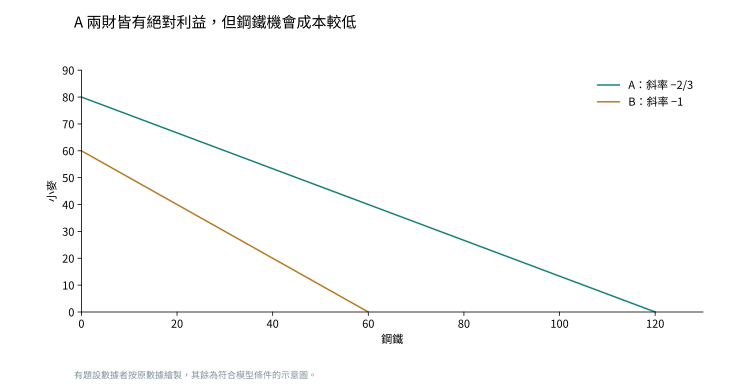
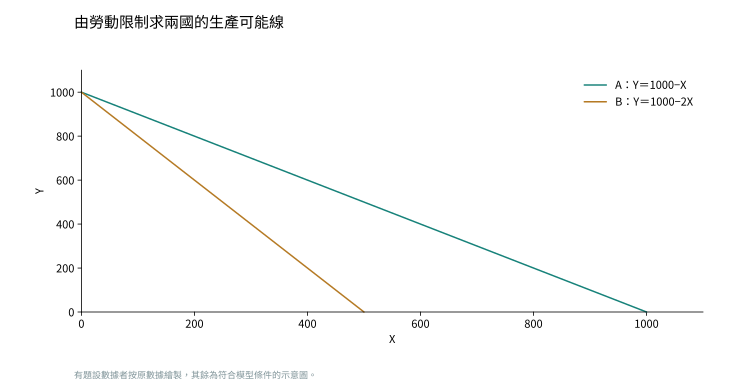
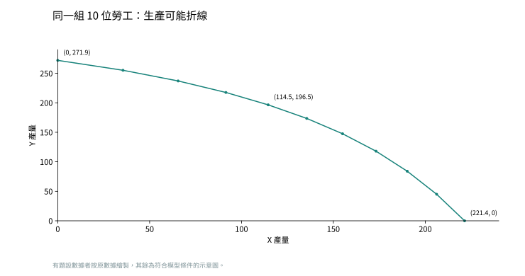
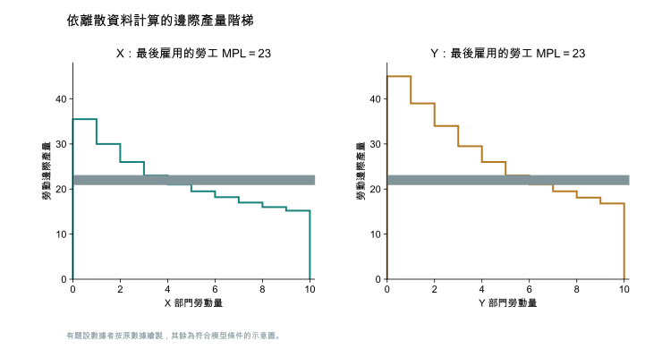
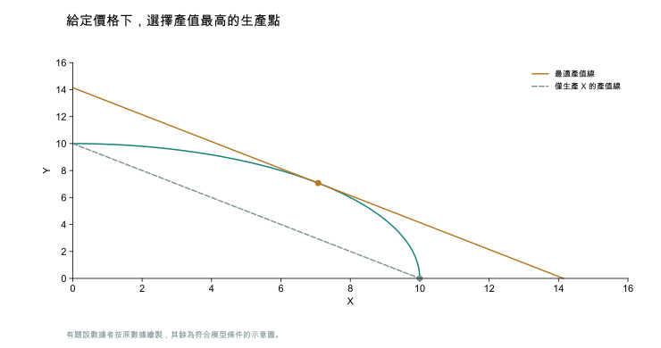
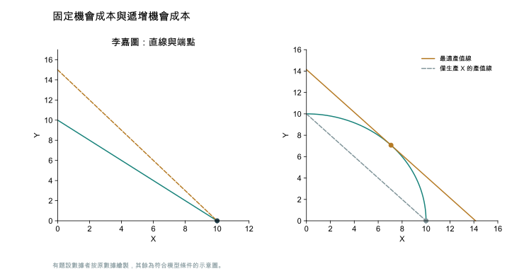

第 1 章 緒論
目前提供的第一章課本共 9 頁，以正文結束，未包含章末習題。此處保留章節位置，待取得習題頁後補入原題與參考解答。
第 2 章 李嘉圖模型：古典貿易理論
第 1 題 絕對利益與比較利益
題目連結何謂絕對利益原理？何謂比較利益原理？兩種理論有何差別？試比較之。
參考解答
絕對利益（absolute advantage）比較同一商品的生產效率，使用較少資源者有絕對利益。比較利益（comparative advantage）比較生產一財必須放棄另一財的機會成本，機會成本較低者有比較利益。貿易分工依比較利益，即使一國對所有商品都有絕對利益，只要兩國相對成本不同，仍可透過各自專業化及交換獲利。
解析
這一題考的是兩個判準的分界。絕對利益（absolute advantage）看的是投入：生產同一商品，誰用的資源少。比較利益（comparative advantage）看的是放棄：多生產一單位某財，必須少生產多少另一財，這個被放棄的量就是機會成本。兩者會給出不同答案，是因為絕對利益在跨國比同一商品，比較利益先在各國內部算出機會成本再跨國比。亞當斯密只用絕對利益，推出「樣樣不如人的國家沒有貿易機會」；李嘉圖改用機會成本，說明只要兩國的相對成本不同就有分工空間。即：不要問「誰做得比較好」，要問「做這個要放棄什麼」。
易錯提醒
兩國的機會成本互為倒數，所以一國不可能對兩財同時具有比較利益；但一國可以對兩財同時具有絕對利益。
第 2 題 在同圖畫出兩國生產可能線
題目連結假設 A、B 兩國擁有相同的資源，A 國在生產鋼鐵和小麥上具有絕對利益，同時生產鋼鐵上具有比較利益。請在同一個圖形中畫出 A、B 兩國的生產可能曲線。
參考解答
橫軸放鋼鐵、縱軸放小麥。相同資源下 A 對兩財都有絕對利益，所以 A 的兩軸截距都比 B 遠。A 生產鋼鐵的機會成本較低，所以 A 線的斜率絕對值較小。重繪圖以 A 截距（120，80）、B 截距（60，60）示意，A 生產一單位鋼鐵放棄 2/3 單位小麥，B 則放棄 1 單位。這組數值只用於滿足題設作圖，不是原題給定數字。

解析
這一題考的是把兩種利益同時畫進同一張圖。生產可能線（PPF）在李嘉圖模型中是直線，兩軸截距代表把全部資源投入單一財的最大產量，斜率絕對值則是橫軸那一財的機會成本。「A 對兩財都有絕對利益」決定的是截距：相同資源下 A 的兩個截距都比 B 遠。「A 對鋼鐵有比較利益」決定的是斜率：A 多做一單位鋼鐵放棄的小麥較少，所以 A 的線比較平坦。即：線離原點多遠是絕對利益的事，線斜成什麼角度才是比較利益的事。
易錯提醒
不要把「A 的線整條在外面」當成 A 對兩財都有比較利益。位置和斜率是兩回事。
第 3 題 勞動成本、交換利益與相對工資
題目連結A、B 兩國生產一單位 X、Y 所需勞工天數如下。A：X 為 100 天、Y 為 4 天。B：X 為 60 天、Y 為 3 天。（a）兩國無貿易時，X 以 Y 表示的均衡價格各為何？（b）各對哪種產品具有比較利益？（c）若 1 部電腦交換 22 個小麥，各國每單位進口商品可節省多少勞動天數？（d）改為交換 24 個小麥時呢？（e）均衡貿易條件範圍為何？（f）貿易後相對工資率範圍為何？（g）從世界與個別國家觀點討論貿易利得及其分配。依題目脈絡，以下以電腦為 X、小麥為 Y。
參考解答
（a）競爭下價格等於工資乘單位勞動需求，同國工資相消，所以相對價格等於單位勞動需求之比。A 為 25，B 為 20。（b）B 生產 X 的機會成本較低，出口 X。A 出口 Y。
（c）A 進口一部電腦，需出口 22 單位小麥，花 22×4＝88 天，比自製 100 天少 12 天。B 進口一單位小麥只需出口 1/22 部電腦，花 60/22 天，比自製 3 天少 3/11 天。
（d）同理，A 每部進口電腦節省 100−24×4＝4 天，B 每單位進口小麥節省 3−60/24＝0.5 天。兩國的「每單位進口品」不同，不應把兩個節省天數當成同一商品直接比較。
（e）價格介於 20 與 25。要讓兩國都嚴格獲利，須 $20 < p < 25$。端點時有一國對邊際交換無額外利益，是否成為均衡還取決於世界需求與國家規模。（f）A 專業生產 Y，B 專業生產 X，所以 $P_{Y} = 4w_{A}$、$P_{X} = 60w_{B}$。相除並解出相對工資，得到 $0.6 \le \frac{w_{A}}{w_{B}} \le 0.75$。
（g）世界依比較利益分工可節省總勞動，使相同資源支撐更多消費。個別國家在內部價格之間交換也可獲利，但分配受貿易條件影響。p 從 22 升至 24，B 出口電腦換得更多小麥，利益增加，A 進口電腦更貴，利益減少。相對價格更靠近哪國自給價格，該國新增交換利益就較小。
解析
這一題把李嘉圖模型的四個結論串成一條線：自給價格、比較利益、貿易條件範圍、相對工資範圍。第一步，完全競爭下價格等於單位成本，$P_{X} = w \cdot a_{LX}$、$P_{Y} = w \cdot a_{LY}$，同國工資相消，所以自給相對價格就等於單位勞動需求之比。第二步，相對價格較低的國家對該財有比較利益。第三步，國際價格落在兩國自給價格之間，兩國才都划算。第四步，貿易後各自專業化，把兩國的價格式相除就解出相對工資。即：成本比先決定價格，價格比再決定誰出口，最後價格反過來把兩國工資的比例夾住。
易錯提醒
（c）與（d）算出的「節省天數」兩國單位不同——A 省的是每部電腦的天數，B 省的是每單位小麥的天數，不能直接比大小。
第 4 題 南韓、日本的鋼鐵與錄放影機
題目連結每人每天產量如下：南韓鋼鐵 80 噸、錄放影機（VCR）40 臺，日本鋼鐵 20 噸、VCR 20 臺。（a）兩國生產一臺 VCR 的機會成本各為多少？（b）開放貿易後的貿易型態為何？（c）貿易條件與均衡工資範圍為何？（d）日本鋼鐵產量提高至每人每天 60 噸後，貿易型態如何改變？
參考解答
（a）一天用來做 VCR 就放棄當天可做的鋼鐵，因此南韓一臺成本為 80/40＝2 噸，日本為 20/20＝1 噸。（b）日本出口 VCR，南韓出口鋼鐵。（c）令 p 為每臺 VCR 換得的鋼鐵噸數，$1 \le p \le 2$。南韓每天工資為 $80P_{\text{鋼}}$，日本為 $20P_{VCR}$，兩者相除得 $w_{\text{韓}}/w_{\text{日}} = \frac{4}{p}$，因此範圍為 2 至 4。題目未給貨幣價格，不能求各國工資的絕對金額。
（d）日本新的一臺 VCR 機會成本為 60/20＝3 噸，高於南韓的 2 噸。因此貿易方向反轉，日本出口鋼鐵，南韓出口 VCR。比較利益會隨相對生產力改變。
解析
這一題用「每人每天產量」而不是「每單位所需人數」出題，方向要先轉過來。產量表下的機會成本是「同一天改做另一財會放棄多少」，所以一臺 VCR 的機會成本等於該國當天的鋼鐵產量除以 VCR 產量。（d）要考的是比較利益不是固定不變的：日本鋼鐵生產力提高後，它做 VCR 要放棄的鋼鐵變多，機會成本由 1 升到 3，超過南韓的 2，於是分工方向整個反轉。即：生產力一改，誰該做什麼就跟著換邊。
易錯提醒
產量表與投入表的倒數關係要先想清楚：產量越大代表投入越少，機會成本的分子分母不要放反。
第 5 題 由勞動限制求 PPF 與自給價格
題目連結A 國有 1000 位勞工，生產一單位 X、Y 各需 1 人。B 國有 2000 位勞工，生產一單位 X 需 4 人、Y 需 2 人。（a）畫出兩國生產可能線。（b）兩國未貿易前，X 以 Y 表示的均衡價格各為何？
參考解答
（a）先將「每單位所需勞動×產量」加總，等於充分就業的總勞動，再解出 Y。令其中一財產量為零，就得到另一財最大產量，據此畫直線。
A 的兩軸截距皆為 1000，B 的 X 截距為 500、Y 截距為 1000。（b）自給且兩財皆生產時，相對價格等於機會成本，即 PPF 斜率的絕對值，因此 A 為 1，B 為 2。

解析
這一題考的是從資源限制式反推生產可能線。充分就業條件是「每單位所需勞動×產量」在兩部門加總等於總勞動，這是一條直線方程式，把其中一財產量設為零就得到另一財的最大產量，也就是兩軸截距。自給自足且兩財都生產時，相對價格等於機會成本，也就是這條直線斜率的絕對值。即：先寫出「人剛好用完」這條式子，截距和斜率就都在裡面了。
易錯提醒
B 國勞工較多（2000 人）不代表兩財產量都較高；它做 X 要 4 人，X 的最大產量反而只有 500。
第 6 題 技術同幅改善是否改變比較利益？
題目連結延續第 5 題。（a）兩國各對哪種財具有比較利益？（b）均衡貿易條件範圍為何？（c）貿易後 A、B 工資是否相同？（d）若 B 生產兩財所需勞動都減為原先的 1/4，新投入量為 X 需 1 人、Y 需 2/4 人，A 維持各 1 人，貿易型態是否改變？
參考解答
（a）A 的 X 機會成本 1 低於 B 的 2，所以 A 出口 X、B 出口 Y。（b）$1 \le p = \frac{P_{X}}{P_{Y}} \le 2$，嚴格互利取內部。（c）A 工資為 $P_{X}$，B 工資為 $\frac{P_{Y}}{2}$，因此 $\frac{w_{A}}{w_{B}} = 2p$，介於 2 至 4，不會均等。李嘉圖模型允許兩國技術不同，不能套用相同技術的要素價格均等定理。（d）B 新的機會成本為 1/(1/2)＝2，與原來相同，因此比較利益及出口方向不變，但產能、相對工資與均衡價格可能改變。
新工資式的分母為 $2P_{Y}$，因 B 每單位勞動可生產 2 單位 Y。新相對工資範圍為 0.5 至 1，說明均等比例技術進步雖不改變比較成本比率，仍能提高 B 的相對工資。
解析
這一題的重點在（d）：同比例的技術進步會不會改變比較利益。比較利益比的是「兩財投入之比」，B 的兩個投入係數同乘 1/4 後，比值完全不變，所以機會成本不變、出口方向不變。但工資是另一回事：工資由該國每單位勞動能生產的量決定，B 的生產力整體提高，相對工資 $\frac{w_{A}}{w_{B}}$ 因此下降（也就是 B 的工資相對上升）。（c）則提醒要素價格均等定理不能套在李嘉圖模型上，因為那個定理要求兩國技術相同，而李嘉圖模型正是靠技術不同解釋貿易。即：技術一起進步不會改變誰做什麼，但會改變誰領得比較多。
易錯提醒
別把「比較成本比率不變」誤讀成「什麼都不變」；產能、相對工資與均衡價格都可能移動。
第 7 題 相反絕對利益如何推出比較利益？
題目連結舉例說明：若 A 對 X 有絕對利益、B 對 Y 有絕對利益，則 A 必對 X 有比較利益、B 必對 Y 有比較利益。
參考解答
例如 A 生產一單位 X、Y 各需 1、4 小時，B 各需 3、2 小時。A 做 X 更省時，B 做 Y 更省時。A 的 X 機會成本為 1/4 單位 Y，小於 B 的 3/2，故 A 對 X 有比較利益，B 對 Y 有比較利益。一般而言，$a_{AX} < a_{BX}$ 且 $a_{AY} > a_{BY}$，兩次不等式相乘即可得 $\frac{a_{AX}}{a_{AY}} < \frac{a_{BX}}{a_{BY}}$。
解析
這一題要證明的是一個方向性命題：絕對利益互補時，比較利益必然跟著互補。證明的關鍵是把兩個不等式相乘。A 對 X 有絕對利益寫成 $a_{AX} < a_{BX}$，B 對 Y 有絕對利益寫成 $a_{AY} > a_{BY}$，把第二式取倒數後與第一式相乘，就得到 $\frac{a_{AX}}{a_{AY}} < \frac{a_{BX}}{a_{BY}}$，也就是 A 對 X 的機會成本較低。即：一邊做得比較快、另一邊做得比較慢，相除之後優勢一定落在同一邊。
易錯提醒
反方向不成立：比較利益互補並不保證絕對利益也互補，樣樣落後的國家仍然有比較利益。
第 8 題 相同比較成本與單一產業技術進步
題目連結A 生產一單位 X、Y 需 10、8 人，B 需 5、4 人。（a）兩國可以進行貿易嗎？為什麼？（b）若 A 的 X 需求勞動由 10 降至 5 人，兩國可以貿易嗎？各對哪一財有比較利益？
參考解答
（a）兩國 X 的機會成本皆為 1.25 單位 Y，沒有以比較成本差異產生的嚴格貿易利益。可以在相同價格交換，但基本李嘉圖模型下不會因此增加消費可能性。（b）A 新的機會成本為 5/8＝0.625，小於 B 的 5/4＝1.25，所以 A 出口 X、B 出口 Y，當價格介於 0.625 與 1.25 時可互利。
解析
這一題考的是「比較成本相同」的邊界情況。(a) 中 A 與 B 的 X 機會成本都是 1.25，表示兩國的生產可能線斜率相同、只是長短不同，國際價格不論落在哪裡都不會讓任何一方比自製更划算，所以沒有嚴格的貿易利得。這正說明李嘉圖模型的貿易動力來自「相對成本不同」，不是「技術水準不同」。(b) 中只有 A 的 X 投入改變，比值被打破，分工空間就出現了。即：兩國的成本比一樣時，誰做都一樣，換手沒有意義。
易錯提醒
「沒有嚴格貿易利得」不等於「不能交易」；雙方仍可在相同價格下交換，只是消費可能性沒有擴大。
第 9 題 三國的比較利益排序
題目連結每單位 X、Y 所需勞動：A 為 3、5 人，B 為 1、4 人，C 為 2、2 人。（a）三國可以相互貿易嗎？（b）若 1 單位 X 交換 0.5 單位 Y，各國出口財為何？
參考解答
先求各國 X 的機會成本，再將國際價格與各自成本比較。售價高於自製 X 的機會成本時，生產 X 出口比直接做 Y 划算。
（a）三國相對成本不同，有貿易基礎。B 最適合 X，C 最適合 Y，A 的方向依世界價格而定，不必每兩國間都同時存在直接交易。（b）$p = 0.5$ 高於 B 的 0.25，B 出口 X。p 低於 A 的 0.6 及 C 的 1，所以 A、C 出口 Y。題目只給定價格，沒有資源與需求資料，尚不能證明 0.5 就是世界均衡價格。
解析
這一題把兩國模型推到三國，考的是「國際價格與各自機會成本比大小」這個通則。判準是：當國際相對價格 p 高於某國自製 X 的機會成本時，該國做 X 拿去換 Y，比自己做 Y 划算，所以出口 X；低於則出口 Y。把三國的機會成本 0.6、0.25、1 和 $p = 0.5$ 一一比對，方向就排出來了。即：價格比自己做的成本高，就該做了去賣；比自己做的成本低，就該買。
易錯提醒
題目只給了一個價格，沒有給各國資源與需求，所以不能宣稱 0.5 就是世界均衡價格。
第 10 題 高低工資國可以互利嗎？
題目連結依題目引用的《經濟學人》1996 年調查，美國、德國每小時工資分別為 17、32 美元，中國為 25 美分。三國可以貿易嗎？美、德分別與中國貿易，對中國是剝削嗎？請說明。
參考解答
可以。成本取決於工資與生產力共同作用，高工資國若生產力也高，仍能在部分商品具有較低單位成本。中國即使各產業生產力都較低，仍可專業生產相對劣勢較小的商品。工資差距本身不足以證明剝削，應比較貿易後的實質所得與原本可行選擇。基本模型下雙方可受益，但勞動條件、議價能力與利益分配需另外判斷，不能由總體貿易利得推論所有勞工待遇都合理。上述數字是歷史題設，並非目前工資。
解析
這一題考的是單位勞動成本（unit labor cost）的概念：成本不是工資，而是工資除以生產力。高工資國如果生產力也高，單位成本仍可能較低；低工資國如果生產力更低，便宜的工資未必轉成便宜的產品。這也解釋了為什麼工資差距本身不能證明剝削——要比較的是貿易後的實質所得與不貿易時的可行選擇。即：老闆在乎的不是一天付多少錢，是一件貨要付多少錢。
易錯提醒
模型證明的是「自願交換可以雙贏」，證明不了「工資水準合理」；勞動條件要用另一套標準判斷。
第 11 題 為何進口競爭部門勞工反對貿易？
題目連結李嘉圖模型認為貿易提高勞工以進出口財表示的工資，因此勞工支持貿易，現實進口競爭產業勞工卻常反對。為什麼？模型是否有缺失？
參考解答
李嘉圖模型假設勞工同質、可無成本跨產業移動且充分就業，忽略短期失業、技能不匹配、地區限制與轉業成本。現實受進口衝擊的勞工可能無法立即轉入出口產業，因此個人所得會下降，即使國家整體仍獲利。模型不是沒有用途，而是其總體互利結論不能直接代替分配分析。另須修正題目前提：基本完全專業化情況下，以出口財表示的實質工資通常不變，以進口財表示的工資才提高。
解析
這一題考的是模型假設與現實的落差，核心是李嘉圖模型的三個假設：勞工同質、可無成本跨產業移動、充分就業。這三個假設一下去，模型裡的工人只會換部門、不會失業，所以看不到進口競爭部門勞工的損失。現實的轉業要時間、要重新訓練、可能還要搬家，這些調整成本在模型裡全被設成零。另外要修正題目的前提：完全專業化時，以出口財衡量的實質工資通常不變，真正提高的是以進口財衡量的工資。即：模型說「換個部門就好」，現實是「換部門要好幾年」。
易錯提醒
模型的總體互利結論不能直接拿來回答分配問題；要談誰受損，必須換成有要素移動限制的模型。
第 12 題 生產力落後會讓所有出口消失嗎？
題目連結評論：「若臺灣生產力成長率比競爭對手落後，競爭力將逐漸喪失，乃至無法出口任何產品，且生活水準將下跌。」
參考解答
「所有出口必然消失」不正確。貿易依相對生產力與比較利益，相對工資、價格也會調整，效率較低國仍可出口相對劣勢較小的商品。但生產力成長落後可能使相對工資或貿易條件不利，生活水準的相對進步較慢。不能把相對落後直接等同絕對生活水準必然下降，仍須比較本國生產力、進口價格與實質所得。
解析
這一題考的是「絕對生產力」與「相對生產力」的分別。貿易型態由比較利益決定，而比較利益看的是國內兩財的相對成本，不是跟外國比誰的絕對水準高。生產力成長落後時，相對工資與匯率會調整，讓該國在相對劣勢較小的商品上仍能出口。會受影響的是生活水準的相對進步速度與貿易條件，不是出口這件事本身的存亡。即：跑得比別人慢，不代表會被趕出跑道，只代表名次往後掉。
易錯提醒
「相對落後」與「絕對生活水準下降」是兩件事；要談後者，必須另外比較本國生產力、進口價格與實質所得。
第 13 題 判斷三種貿易說法
題目連結（a）貿易自由化對開發中國家沒有好處，全部好處被先進國拿走，應避免自由化。（b）中國大陸勞工眾多且廉價，臺灣高工資，因此無法在世界市場競爭。（c）美國生產力若不能保持對貿易夥伴的領先差距，就會失去所有出口，生活水準下降。請評估。
參考解答
（a）不正確。只要交換價格優於各自機會成本，雙方都能獲利，利益分配不均不等於其中一方必然零利益。（b）不正確。應比較單位勞動成本，即工資除以生產力，高工資可由高生產力抵銷，且相對成本不同仍能分工。（c）不正確。比較利益不要求全面保持絕對領先，工資與貿易結構也會調整。生產力相對落後可能影響相對所得，但不能直接推出所有出口消失或絕對生活水準下降。
解析
這三句話其實是同一個誤解的三種包裝：都把絕對水準當成貿易的判準。(a) 誤把「利益分配不均」當成「其中一方沒有利益」；只要交換價格優於各自的機會成本，雙方都比不貿易好。(b) 誤把工資當成成本；要比的是工資除以生產力的單位勞動成本。(c) 誤把絕對領先當成出口的條件；比較利益只要求相對成本不同。即：三句話都在比「誰比較強」，而貿易問的是「誰相對比較不吃虧」。
易錯提醒
三題都要先點出命題錯在哪一個判準，再給正確判準，不能只回答「不正確」。
第 14 題 由相對工資與生產力求成本優勢
題目連結依 Solocha（1994），各產業「墨西哥工資／美國工資」及「墨西哥生產力／美國生產力」依序如下：食物製品（0.979，1.624）、煙草（1.052，0.755）、紡織品（0.765，1.049）、成衣服飾（0.699，1.306）、鋼鐵（1.316，0.597）、收音機與電視（1.339，1.159）、木材製品（0.940，1.553）。兩國各對哪些產品具有比較利益？為什麼？
參考解答
單位勞動成本等於工資除以每位勞工的產量。因此先將兩國工資比，再除以兩國生產力比。結果小於 1 表示墨西哥單位勞動成本較低，大於 1 表示美國較低。
按題目順序計算，成本比分別約為 0.603、1.393、0.729、0.535、2.204、1.155、0.605。因此墨西哥在食物製品、紡織品、成衣服飾及木材製品具有成本優勢，美國在煙草、鋼鐵、收音機與電視具有成本優勢。此結論依題設的勞動成本與技術資料，若加入運輸、其他投入及貿易障礙，實際出口結果可能不同。
解析
這一題是把單位勞動成本公式實際代數字。單位勞動成本等於工資除以每位勞工的產量，所以兩國的成本比等於「工資比」除以「生產力比」。結果小於 1 代表墨西哥較便宜，大於 1 代表美國較便宜。要注意題目給的兩欄都已經是「墨西哥／美國」的比值，所以直接相除即可，不必再換算成絕對金額。即：工資比上去、生產力除下來，剩下的那個數字就是誰比較便宜。
易錯提醒
工資比大於 1（墨西哥工資較高）的產業未必成本就高，還要看生產力比是否同時更大，例如收音機與電視。
第 3 章 特定要素模型：貿易與所得重分配
第 1 題 特定與可移動要素
題目連結何謂特定生產要素（specific factor）？何謂可移動生產要素（mobile factor）？
參考解答
特定要素是在所分析期間只能用於某一產業的生產要素，例如僅能生產 X 的專用設備。可移動要素能在產業間轉移，例如本模型中可在 X、Y 部門就業的勞工。「特定」取決於用途與時間範圍，不表示該要素在任何期間都永遠不能轉用。
解析
這一題考的是「特定」兩個字的定義，而定義裡藏著時間範圍。特定要素（specific factor）指在所分析的期間內只能用於某一部門的要素，可移動要素（mobile factor）則能在部門之間轉移。區別不在要素的物理性質，而在它在這段時間內能不能換用途：農地短期只能種田，長期可以變更地目；工人短期難以轉行，長期可以受訓轉業。即：所謂特定，是「這段時間內搬不走」，不是「永遠搬不走」。
易錯提醒
不要把「特定」理解成該要素在任何情況下都不能轉用；把分析期間拉長，同一個要素就可能變成可移動要素。
第 2 題 以離散產量表繪製 PPF
題目連結本國有 10 單位勞工，X 使用勞工與資本，Y 使用勞工與土地，資本與土地短期固定。各部門勞工投入 1～10 單位時，X 產量依序為 35.5、65.5、91.5、114.5、135.5、155.0、173.2、190.2、206.2、221.4。Y 依序為 45、84、118、147.5、173.5、196.5、217.5、237.0、255.1、271.9。（a）畫出 PPF。（b）說明為何凹向原點。
參考解答
（a）令 X 部門分得 $L_{X}$，則 Y 部門一定分得 $10 - L_{X}$。分別查表取得兩財產量，不能將同樣勞工列的 X 與 Y 直接配對，否則可能用超過 10 位勞工。補上零勞工、零產量的標準假設後，PPF 點依序如下。
（X，Y）：（0，271.9）、（35.5，255.1）、（65.5，237）、（91.5，217.5）、（114.5，196.5）、（135.5，173.5）、（155，147.5）、（173.2，118）、（190.2，84）、（206.2，45）、（221.4，0）。
（b）勞工移往 X 後，X 的勞動邊際產量遞減，而留在 Y 的勞工減少，Y 每少一位勞工損失的產量逐漸增加。因此每增加一單位 X 必須放棄的 Y 越來越多，機會成本遞增，PPF 向外凸、凹向原點。表格只給離散點，圖用折線連接，不冒充已知的精確連續函數。

解析
這一題考的是從離散的產量表畫出生產可能線，關鍵在資源限制。總勞工只有 10 位，所以 X 部門分到 $L_{X}$ 時，Y 部門一定只剩 $10 - L_{X}$，不能把表上同一列的 X 與 Y 直接配成一點，那樣會用掉 20 位勞工。凹向原點的原因是機會成本遞增：勞工持續移向 X 時，X 的邊際產量遞減（新增的產出越來越少），而 Y 失去的勞工每一位都比前一位更珍貴（Y 的邊際產量上升），所以每多一單位 X 要放棄的 Y 越來越多。即：越往一邊做，換來的越少、賠掉的越多，線就會彎。
易錯提醒
配點時務必檢查兩個勞工數加起來是不是剛好 10；這是這一題最常見的錯誤。
第 3 題 邊際產量與最適勞動分配
題目連結延續第 2 題。（a）畫出 X、Y 的勞動邊際生產力曲線。（b）若 $P_{X} = P_{Y}$，決定最適勞動分配與兩財產出。
參考解答
（a）邊際產量是增加一位勞工帶來的新增產出，將相鄰兩列產量相減，第一位則與零產量相比。
X 的第 1～10 位勞工邊際產量：35.5、30、26、23、21、19.5、18.2、17、16、15.2。Y：45、39、34、29.5、26、23、21、19.5、18.1、16.8。
（b）價格相同時，產值最大化等於最大化 $X + Y$。將 10 位勞工分配到最大的 10 個邊際產量上，得到 X 用 4 位、Y 用 6 位。檢查改移一人：由 Y 移到 X，增加 21 卻損失 23。由 X 移到 Y，同樣增加 21、損失 23，所以兩方向都不值得移動。
由於勞工以整數計，不能要求兩條離散邊際產量曲線一定在某個點精確相交。以共同商品價格為 1，工資在 21 與 23 之間可支持此配置，端點有邊際無差異。圖形依表列階梯呈現，沒有擅自插入連續技術假設。

解析
這一題考的是離散版的最適配置條件。邊際產量是相鄰兩列產量之差，不是產量本身。當兩財價格相同，產值最大化就等於 $X + Y$ 最大化，所以把 10 位勞工配給邊際產量最大的 10 個位置即可。驗算的方法是檢查兩個方向的移動都不划算：由 Y 移一人到 X 得 21 卻失 23，反向同樣得 21 失 23。連續模型裡的條件是 $P_{X} \cdot \text{MPL}_{X} = P_{Y} \cdot \text{MPL}_{Y}$，離散情形只能要求「再移一人就會變差」。即：人只能整個整個移，所以不必剛好相等，只要再動一步就變壞就是最適。
易錯提醒
邊際產量表要自己算，不能直接拿題目給的總產量當邊際產量。
第 4 題 土地增加、資本減少的合成效果
題目連結勞動可移動，資本與土地分別為衣服與食物的特定要素。一國土地存量增加，伴隨資本存量減少，分析土地與資本報酬：（a）無法與外國貿易。（b）小國自由貿易。
參考解答
（a）封閉經濟中，資源變動還會改變衣服與食物的相對價格。一般供需圖下，食物供給相對擴大，使食物相對價格下降，對土地不利，衣服相對稀缺則對資本有利。但要素數量、勞動轉移及商品價格效果會同時作用，未給生產函數、偏好與變動幅度，不能算出唯一的報酬變化幅度，也不宜只用一句「要素變多，總所得必少」作答。（b）小國商品價格固定。土地增加會提高勞動需求、推高工資，壓低兩種特定要素的單位報酬。資本減少則有相反的工資與報酬效果。兩衝擊合併後淨工資方向未定，因此兩種特定要素的單位報酬方向也須看哪個效果較強。必須區分每單位報酬與「報酬×存量」的總所得。
可用固定價格、兩部門技術 $Q=\sqrt{\text{專屬要素}\times\text{勞動}}$ 的例子檢查：共同工資取決於資本與土地的加權總量，土地增加與資本減少可互相抵銷，故不能單憑變動方向判定淨效果。
推導是由 $w = \frac{P_{C}\sqrt{\frac{K}{L_{C}}}}{2}$ 解出 $L_{C} = \frac{P_{C}^{2}K}{4w^{2}}$，食物部門同理，再利用 $L_{C} + L_{F} = L$。單位資本報酬則由 $\frac{P_{C}\sqrt{\frac{L_{C}}{K}}}{2}$ 代入前式得到。這是說明「資料不足以唯一判斷」的明確例子，不是額外假定原題只有這種技術。
解析
這一題考的是兩個方向相反的衝擊疊在一起時，能不能只憑方向下結論。土地增加會提高 Y 部門的勞動邊際產值、吸引勞工、推高工資；資本減少則降低 X 部門的勞動需求、壓低工資。兩個效果對共同工資的作用方向相反，而特定要素的單位報酬又取決於工資，所以淨方向要看哪一邊的幅度大，而題目沒有給生產函數形式、偏好與變動幅度，算不出唯一答案。另外要分清「每單位報酬 r」與「全部報酬 rK」：單位報酬下降時，總報酬未必下降。即：一邊往上推、一邊往下拉，沒有給力道大小就說不出最後往哪邊走。
易錯提醒
（a）封閉經濟還要多考慮商品相對價格會變，不能直接套用（b）小國價格固定的結論。
第 5 題 石油價格上漲與所得重分配
題目連結1973 年第一次石油危機時，石油價格上漲幾達 4 倍。建立石油與製造業兩部門模型，討論對生產要素的所得重分配效果。
參考解答
設勞動可跨部門移動，油田為石油部門特定要素、機器資本為製造業特定要素，固定製造品價格。油價上漲提高石油部門勞動邊際產值，吸引勞工流入，工資上升但漲幅小於油價。油田所有者以兩財衡量的實質報酬都提高，製造業特定資本的實質報酬下降。勞工以製造品衡量的工資提高，以石油衡量則下降，總福利依消費組合而定。題目的 4 倍不能直接當成工資也漲 4 倍。此簡化模型將石油視為最終商品，若加入石油作為製造業中間投入，還要分析成本上升的額外影響。
解析
這一題考的是特定要素模型的標準價格衝擊，石油扮演漲價的那一財。油價上漲使石油部門的勞動邊際產值$(\text{VMPL} = P \times \text{MPL})$按比例放大，吸引勞工流入，共同工資上升；但石油部門吸收勞工後 MPL 下降，抵銷一部分漲幅，所以工資的漲幅小於油價漲幅。結果是：油田（漲價部門的特定要素）實質報酬以兩財衡量都上升，製造業資本（另一部門的特定要素）都下降，勞工以製造品衡量變好、以石油衡量變差，淨效果看消費組合。即：哪一邊漲價，哪一邊綁死的資源就賺，另一邊綁死的資源就賠，中間能跑的人兩面都沾一點。
易錯提醒
題目的「4 倍」是商品價格的倍數，不能直接套在工資上；工資的漲幅一定小於 4 倍。
第 6 題 新發現油礦與製造業
題目連結若北海地區發現非常豐富的石油礦，對北海國家的製造業發展有何影響？
參考解答
在固定商品價格的特定要素模型中，油礦資源增加提高石油部門的勞動邊際產量，吸引勞工並推高共同工資。製造業因勞工流出而減產，其特定資本報酬下降。這說明資源發現可能擠壓製造業的資源移動效果，與荷蘭病（Dutch disease）的分析相關。若進一步討論匯率與服務業擴張，必須另加入非貿易財及支出效果，不能把本題兩部門模型當成已包含全部機制。
解析
這一題問的是資源發現對製造業的擠壓，也就是荷蘭病（Dutch disease）的資源移動效果。在商品價格固定的特定要素模型裡，油礦增加提高石油部門的勞動邊際產量，勞工被較高的工資吸引過去，製造業因為人手流失而減產，其特定資本的報酬隨之下降。注意這裡的機制純粹是「勞工被搶走」，與匯率升值造成的出口競爭力下降是兩條不同的管道。即：挖到油不是壞事，壞的是工廠請不到人。
易錯提醒
完整的荷蘭病還包含匯率與非貿易財部門擴張；本題的兩部門模型只涵蓋資源移動效果這一條。
第 7 題 特定要素增加，誰受益？
題目連結利用本章 3.1 節基本模型，說明 X 部門特定要素增加 β％時，對哪一種生產要素較有利？
參考解答
在商品價格固定、勞動總量固定的條件下，可移動勞工受益，因 X 部門勞動邊際產值提高、共同工資上升。Y 部門失去勞工，其特定要素報酬下降。X 的資本增加比例高於吸引進來的勞動比例，因此每單位資本搭配的勞動減少，單位資本報酬也下降。要比較的是每單位要素報酬，不能由資本總量增加就推論每位原資本所有者的單位收益提高。
固定規模報酬下，若 X 的勞動也增加 β％，MPL 原可不變。但實際共同工資上升，故 X 的 MPL 必高於原值，代表其勞動增加比例未達 β％。因此 $\frac{L_{X}}{K}$ 下降，MPK 與實質資本報酬下降。

解析
這一題考的是「總量」與「每單位」的分別，答案會違反直覺。X 部門的專屬資本增加後，X 的勞動邊際產量提高，吸引勞工並推高共同工資，所以可移動的勞工受益；Y 部門失去勞工，其特定要素報酬下降。至於 X 自己的資本：工資上升代表 X 的 MPL 高於原值，表示 X 吸收勞工的比例沒有跟上資本增加的比例，於是每單位資本搭配的勞動變少，單位資本報酬 r 反而下降。即：資本自己變多了，每一台機器反而分到更少工人，單台賺的就變少。
易錯提醒
單位報酬 r 下降不代表資本家的總所得 rK 下降，K 同時變大了，要分開討論。
第 8 題 勞工外移的效果
題目連結兩國、兩財、三要素模型中，勞動可移動，其餘兩要素為特定要素。若一國因政治不穩或戰爭使勞工移往外國，國內兩財產出與三種要素價格如何改變？
參考解答
先固定商品價格、兩種特定要素及技術，只分析勞動減少。勞動變稀缺使共同工資上升，兩部門都減少用工，故兩財產出皆下降，兩種特定要素因搭配勞動減少而報酬下降。商品價格固定時，實質方向與名目方向相同。若移民規模足以改變世界商品價格，或戰爭也破壞資本與土地，便不能只套用這個單一衝擊結論，需另分析價格及其他資源變動。
解析
這一題是特定要素模型的「勞動減少」衝擊，正好是課本「勞動增加」那一節的反向。固定商品價格與兩種特定要素後，勞動變稀缺使共同工資上升，兩個部門都減少用工，所以兩財產量同時下降；兩種特定要素因為能搭配的勞動變少，邊際生產力與報酬都下降。因為商品價格固定，名目方向與實質方向一致，不必再分別除以兩個價格討論。即：人走掉了，留下來的人更值錢，但機器和土地都在閒置，所以都虧。
易錯提醒
若移出規模大到改變世界商品價格，或戰爭同時破壞了資本與土地，就不能只套用單一衝擊的結論。
第 4 章 要素比例模型：資源秉賦與貿易
第 1 題 資源總量少仍能貿易
題目連結臺灣資源匱乏，1960 年代不僅資本不足，勞動人口也僅占世界人口的 0.376％，為何仍能與其他國家貿易？
參考解答
赫克歇爾－歐林模型（Heckscher–Ohlin model）比較的是資源比例，不是資源總量。一國即使資本與勞動都比大國少，仍可能具有較低的資本勞動比，因而是相對勞動豐富國。在其他條件相同時，可出口勞力密集財、進口資本密集財。國家規模小影響產量與市場影響力，不會自動消除比較利益。
解析
這一題考的是「豐富」的定義：比例，不是總量。H–O 模型判斷一國是資本豐富還是勞動豐富，用的是資本勞動比 $\frac{K}{L}$ 與另一國相比的高低，所以一個資本與勞動都少的小國，只要 $\frac{K}{L}$ 比對方低，就是相對勞動豐富國，可以出口勞力密集財。國家規模影響的是產量水準與對世界價格的影響力，不影響比較利益的方向。即：比的是「每個工人配幾台機器」，不是「全國有幾台機器」。
易錯提醒
人口占世界 0.376% 這種總量數字不能拿來判定資源型態，要先除以該國自己的另一項要素。
第 2 題 由資源比例推導貿易與分配
題目連結H、F 技術相同，X 為勞力密集財、Y 為資本密集財。（a）H 資本 1000 萬元、勞工 500 人，F 資本 2000 萬元、勞工 1000 人，是否可貿易？（b）若 F 勞工改為 2000 人，其餘不變，是否可貿易？（c）兩國各對哪財有比較利益，貿易型態如何？（d）H 哪種要素受益、哪種受損，實質報酬如何？（e）需求逆轉時，上述型態是否仍成立？
參考解答
（a）先比較每人資本，H 為 1000 萬/500＝2 萬元，F 為 2000 萬/1000＝2 萬元。資源比例相同，在相同齊序偏好與技術等標準假設下，沒有來自資源比例差異的貿易動機。這不表示加入其他差異後也完全不能貿易。
（b）（c）F 勞動增至 2000 人後，每人資本降為 1 萬元，H 相對資本豐富、F 相對勞動豐富。因此 H 出口 Y、進口 X，F 相反。（d）H 的 Y 相對價格因貿易上升，依斯托爾珀－薩繆爾森定理，資本的實質報酬以兩財衡量皆提高，勞動的實質工資皆下降。只給稟賦不足以算出報酬率數值。（e）若偏好差異強到逆轉自給相對價格，貿易方向可反轉，原結論不再保證成立，因相同偏好條件已被移除。
解析
這一題把 H–O 定理與斯托爾珀－薩繆爾森（S–S）定理接在一起考。第一步用 $\frac{K}{L}$ 判斷誰相對資本豐富；(a) 兩國每人資本都是 2 萬元，比例相同，所以沒有來自資源差異的貿易動機。第二步由 H–O 定理定出口財：資本豐富國出口資本密集財。第三步由 S–S 定理定分配：哪一財的相對價格上升，該財密集使用的要素實質報酬就上升，另一要素下降。(e) 則提醒整條推論建立在「兩國偏好相同」上，偏好差異夠大時自給價格順序會反轉，結論不再成立。即：先比例、再方向、最後分配，三步缺一不可。
易錯提醒
只給資源稟賦算不出工資與報酬率的數值，只能判斷升降方向。
第 3 題 資本豐富是相對概念
題目連結以 1985 年國際價格估計的每人資本存量（美元），1980／1990 年依序為：臺灣 13,664／25,722、香港 12,189／12,762、韓國 9,759／17,995、美國 27,551／34,705、日本 22,085／36,480、德國 43,739／50,116、瑞士 57,061／73,459、加拿大 28,910／42,754、法國 29,104／35,600、泰國 3,359／4,912、印度 1,514／1,946、馬拉威 508／428、獅子山 178／223。（a）臺灣相對韓國在兩年各屬何種資源豐富國，應出口何財？（b）相對美國呢？
參考解答
（a）兩年臺灣每人資本都高於韓國，因此按題目用每人資本代理資本勞動比的口徑，臺灣相對韓國是資本豐富國，應出口資本密集財。（b）兩年臺灣都低於美國，因此相對美國是勞動豐富國，應出口勞力密集財。同一國可對不同夥伴有不同資源比較優勢，不能把「資本豐富」當成不需比較對象的永久標籤。嚴格實證還須留意每人口與每勞工的分母差異。
解析
這一題考的是比較對象會改變分類結果。資本豐富與否是兩兩相對的排序，不是國家的固有屬性，所以臺灣相對韓國是資本豐富國、相對美國是勞動豐富國，兩個結論同時成立而不矛盾。對應的出口預測也跟著換：和韓國做生意時出口資本密集財，和美國做生意時出口勞力密集財。即：同一個人在不同隊伍裡，可能是最高的，也可能是最矮的。
易錯提醒
題目用「每人資本」代理資本勞動比；嚴格實證要留意分母是總人口還是勞動人口。
第 4 題 兩岸貿易與要素報酬
題目連結假設臺灣相對大陸為資本豐富國，利用本章理論討論兩岸加入 WTO 後，貿易型態、工資與資本報酬的影響。
參考解答
在兩財兩要素、相同技術與偏好、完全競爭且持續生產兩財的模型下，臺灣出口資本密集財，大陸出口勞力密集財。臺灣資本密集財的相對價格上升，使資本實質報酬提高、勞動實質報酬下降。大陸方向相反，勞動受益、資本受損。這是題設下貿易開放的比較靜態結果，不是已驗證的歷史因果估計，也不能直接預測所有技能勞工的薪資。
解析
這一題是把 H–O 與 S–S 套到一個真實政策事件上。推論鏈是：資源比例決定出口財 → 出口財的相對價格上升 → 該財密集使用的要素實質報酬上升、另一要素下降。臺灣相對資本豐富，所以出口資本密集財，資本受益、勞動受損；大陸相對勞動豐富，結論對調。要注意這是模型在給定假設下的比較靜態結果，不是對歷史資料的因果估計。即：開放之後誰賺誰賠，看的是你手上握的是資本還是勞動，以及你的國家這次哪一種要素變貴。
易錯提醒
模型的勞動是同質的，推不出「哪一類技能的薪資」會怎麼變，那需要多要素或異質勞動的設定。
第 5 題 自由貿易是否讓工資一致？
題目連結臺灣與大陸加入 WTO 後若完全自由貿易，兩岸工資會趨於一致嗎？為什麼？
參考解答
在要素價格均等定理的嚴格條件下會。共同商品價格、相同技術與要素品質、兩財皆生產、無要素密集度逆轉，使兩條零利潤條件決定相同工資與資本報酬。但現實有技術、技能、運輸成本、制度與產業組合差異，且可能完全專業化，因此商品貿易開放本身不足以保證工資相等。應比較同幣別、同品質勞動的報酬，而非直接比較不同貨幣數字。
解析
這一題考的是要素價格均等定理的「條件」而不是結論。定理要成立需要：共同商品價格、兩國技術相同、要素品質相同、兩財都生產、沒有要素密集度逆轉。在這些條件下，兩條零利潤條件把 w 與 r 鎖死在同一組數值上，所以工資會相等。現實不滿足這些條件——技術、技能、運輸成本、制度與產業組合都不同，而且可能完全專業化——所以商品貿易開放本身不足以保證工資相等，只能說有收斂的趨勢。即：定理說的是「條件都成立就會一樣」，不是「開放就會一樣」。
易錯提醒
比較工資要換算成同一幣別、同一品質的勞動，不能直接比兩國的數字。
第 6 題 大國不一定資本豐富
題目連結A 勞動力為 130 千萬人、資本 130 千部機械。B 勞動力為 2.2 千萬人、資本 100 千部機械。（a）哪國資本豐富，哪國勞動豐富？（b）若 X 勞力密集、Y 資本密集，兩國能否貿易？各對哪財有比較利益？
參考解答
兩國表格使用相同單位，先以資本數字除以勞動數字即可排序。若要寫成每人機械數，須把「千部」與「千萬人」換成一致的實際數量，不能把表內比率 1 說成每人一部。
（a）B 每人機械較多，為資本豐富國。A 雖有更多機械總量，仍是相對勞動豐富國。（b）在標準 H–O 假設下可以貿易，A 對 X 有比較利益並出口 X，B 對 Y 有比較利益並出口 Y。
解析
這一題考的是單位換算。題目一欄用「千萬人」、一欄用「千部」，若不換成同一基準就會把比值讀錯。把兩者都還原成實際數量後相除，A 的 $\frac{K}{L}$ 約 0.0001、B 約 0.004545，B 高出許多，所以 B 才是資本豐富國，儘管 A 的機械總數比較多。這再一次說明豐富看比例不看總量。即：機器多不代表機器夠分，要看一個人能分到幾台。
易錯提醒
表內數字相除得到 1 的那種寫法不能說成「每人一部機械」，單位還沒換算。
第 7 題 雷布津斯基定理
題目連結何謂 Rybczynski 定理？
參考解答
在兩財兩要素、技術不變、兩財皆生產且商品價格固定下，一種要素增加會使密集使用該要素的商品產量增加，另一商品產量下降。例如勞動增加使勞力密集 X 擴張。因 X 同時需要資本，必須由 Y 收縮釋出資本才能配合新增勞動，故不是兩財都同比例增加。若兩種要素都同比例增加，則是平衡成長，不屬於單一要素增加的結論。

解析
這一題考的是雷布津斯基定理的「另一財為什麼會減產」。關鍵在於擴張的那一財不是只需要新增的那種要素。勞動增加使勞力密集的 X 擴張，但 X 同時也要配資本，而全國資本沒有增加，只能由 Y 收縮釋出，所以 Y 的產量下降。定理成立的前提是商品價格固定、兩財都還在生產；若價格會變或一財停產，結論要重新檢查。即：多來的工人要有機器才做得出東西，那些機器只能從另一邊搬過來。
易錯提醒
「兩種要素都同比例增加」是平衡成長，兩財都增產，不適用這個定理。
第 8 題 李昂提夫矛盾
題目連結何謂 Leontief 矛盾？有哪些可能因素可以解釋？
參考解答
李昂提夫以美國投入產出資料估算出口財與進口替代財所需資本勞動比，發現被認為資本豐富的美國，出口財反而較不資本密集，與簡單 H–O 預測相反。可能解釋包括未計入人力資本與技能差異、自然資源、技術差異、需求逆轉、貿易障礙、要素密集度逆轉及規模經濟。檢驗用美國技術估算進口替代生產，不等於直接測量各來源國的實際投入。每種解釋都須另以資料驗證，不能只列出可能性就視為矛盾已完全解決。
解析
這一題考的是理論與實證對不上時該怎麼讀。李昂提夫矛盾（Leontief paradox）是指：被認為資本豐富的美國，以投入產出表估出的出口財資本勞動比，反而低於進口替代財，與 H–O 預測相反。各種解釋的共同結構是「某個被省略的差異」：勞工品質與人力資本、自然資源、技術差異、需求逆轉、貿易障礙、要素密集度逆轉與規模經濟。每一項都是在說「原本的記帳或假設少算了什麼」。即：不是定理一定錯，而是當初量的東西和定理在講的東西不是同一個。
易錯提醒
列出可能解釋不等於矛盾已解決；每一項都還要用資料驗證。
第 9 題 擴大效果與勞工反對開放
題目連結臺灣加入 WTO 前有勞工遊行，利用 S–S 定理的擴大效果（magnification effect）解釋。
參考解答
若臺灣相對交易對象為資本豐富國，開放使資本密集出口財 Y 的相對價格上升。依 S–S 定理，資本報酬的漲幅大於 Y 價格漲幅，工資則相對兩財價格都下降，所以勞工可能反對，即使整體國家仍有貿易利得。這是依勞動為相對稀少要素的條件分析，不能將所有抗議原因都歸因於單一模型。
帽號表示小幅比例變動。工資變動小於兩種商品價格的變動，故 $\frac{w}{P_{X}}$ 與 $\frac{w}{P_{Y}}$ 都下降。擴大效果比較的是報酬與價格的百分比變動，並非「工資金額減少比商品價格金額更多」。
解析
這一題考的是擴大效果（magnification effect）：要素報酬的「百分比」變動幅度大於商品價格的百分比變動。推導來自完全競爭的零利潤條件——商品價格等於成本份額加權的要素價格。當 Y 漲價而 r 要上升、w 要下降時，為了讓加權平均後仍等於上漲後的價格，r 的漲幅必須超過 $P_{Y}$ 的漲幅。把四個變動由大到小排成 r̂＞P̂$_{Y} > P$̂_X＞ŵ，就看得出工資相對兩財價格都變差，所以勞工會反對。即：有一邊往下拖，另一邊就得漲得比目標更凶，總和才追得上。
易錯提醒
擴大效果比的是百分比變動的大小順序，不是金額；不要寫成「工資減少的金額比價格增加的金額多」。
第 10 題 勞動豐富、土地稀少國的分配
題目連結甲國勞動豐富、土地稀少。建立理論模型，說明貿易對哪些要素的國民所得分配較有利。
參考解答
建立兩財兩要素 H–O 模型，以勞動與土地為可跨部門配置的要素，X 勞動密集、Y 土地密集，其餘標準條件成立。甲國出口 X、進口 Y，X 相對價格提高。依 S–S 定理，勞工以兩財衡量的實質工資都提高，土地所有者的實質租金都下降。因此對相對豐富的勞動有利，對稀少土地不利。若改成短期土地與資本都具產業特定性，便需改用特定要素模型，不能混用結論。
解析
這一題要自己把模型建起來再套定理，重點是選對模型。題目說「勞動豐富、土地稀少」，而且問的是長期的國民所得分配，所以兩種要素都應該設成可跨部門移動，用 H–$O + S$–S 來回答：出口勞動密集財 → 該財相對價格上升 → 勞動實質報酬上升、土地實質租金下降。如果改成短期、土地與資本綁在各自產業，那就要換成特定要素模型，結論會變成「出口部門的特定要素受益」，而勞工的實質所得反而不確定。即：先問要素能不能搬家，再決定用哪一個模型，兩個模型的答案不一樣。
易錯提醒
不要把 S–S 的結論（看擁有哪種要素）和特定要素模型的結論（看在哪個部門）混用。
第 11 題 為何不強制完全專業化？
題目連結在 H–O 模型中，證明一國完全專業化生產出口財的福利，低於自由貿易下不完全專業化生產出口財的福利。
參考解答
此命題須以前提「給定世界價格下，最適生產點確實位於 PPF 內部」成立。凹向原點的 PPF 上，與價格線相切的內部點能使生產價值最大。若強迫移到只生產出口財的軸端點，該點位於較低的平行產值線，所得較少。面對相同世界價格，消費預算集合縮小，最高可達效用也較低。因此貿易不要求所有國家完全專業化。若最適點本來就在端點，命題的嚴格不等式不成立。
右側為強制只生產 X 的產值，左側為可自由選生產組合的最大產值。價格相同且消費者偏好多多益善時，較高所得可支持較高效用，完成從生產到福利的推論。

解析
這一題考的是「生產點最適」與「福利最高」之間的連結。在凹向原點的生產可能線上，與世界價格線相切的那一點使按世界價格計算的產值最大；強迫移到只生產出口財的端點，該點落在一條較低的平行產值線上，所得因此較少。所得較少代表預算線往內移、可達到的最高無異曲線較低，福利於是下降。即：把全部資源壓在一樣東西上，賣得到的總金額反而比較少，能買的也就比較少。
易錯提醒
這個嚴格不等式的前提是最適點本來就在 PPF 內部；若最適點原本就在端點，兩者相等。
第 12 題 李嘉圖與 H–O 模型比較
題目連結比較兩模型的「模型假設」「均衡生產點位置」「貿易對要素報酬影響」，並以圖形說明。
參考解答
李嘉圖模型只有勞動，技術可跨國不同，機會成本固定，PPF 為直線。在世界價格嚴格介於兩國機會成本且需求容許時，兩國各在出口財端點生產。勞工以出口財計的工資不變、以進口財計的工資提高，國際工資未必相等。H–O 有兩種可跨產業移動、不可跨國移動的要素，兩國技術相同、稟賦比例不同，兩財要素密集度不同，PPF 通常凹向原點。均衡可在內部切點，極端價格或稟賦也可完全專業化。貿易提高豐富要素、降低稀少要素的實質報酬，且在額外條件成立時可有國際要素價格均等。兩者都依比較利益分工，差別是比較利益的來源及分配機制。

解析
這一題是整理題，建議按「假設—生產點—分配」三欄對照。假設：李嘉圖只有一種要素、技術可跨國不同、機會成本固定；H–O 有兩種可跨產業移動的要素、技術相同、稟賦不同。生產點：李嘉圖的 PPF 是直線，國際價格落在兩國成本比之間時完全專業化；H–O 的 PPF 凹向原點，通常停在內部切點。分配：李嘉圖只有勞動，談不上要素之間的重分配；H–O 透過 S–S 定理讓豐富要素受益、稀少要素受損。即：兩個模型都用比較利益分工，差別在比較利益打哪裡來，以及誰分到那塊餅。
易錯提醒
兩個模型的 PPF 形狀不同是因為要素數目與機會成本設定不同，不是因為其中一個比較「簡化」。
第 13 題 資源差異與完全專業化
題目連結用 Rybczynski 定理證明，資源稟賦差異越大的兩國，相互貿易後專業化生產的可能性越高。
參考解答
固定共同商品價格時，各產業成本最小化的資本勞動比 $k_{X}$、$k_{Y}$ 固定，設 $k_{X} < k_{Y}$。總 $\frac{K}{L}$ 是兩產業投入比的勞動份額加權平均。因此要同時生產兩財，總比率必須落在兩者之間。
若勞動持續相對增加，總 $\frac{K}{L}$ 下降，依 Rybczynski 定理 X 擴張、Y 收縮，直到 Y 變為零。反之資本相對增加會使 X 收縮至零。當國家稟賦比例離開共同價格下的多樣化範圍，就不能維持兩財生產，完全專業化更可能發生。價格也會在世界均衡中調整，因此這是條件化的可能性論證，不是說任意增加一點差異就必然完全專業化。
解析
這一題考的是「多樣化區間」這個概念。商品價格固定時，兩個產業各自的最適資本勞動比 $k_{X}$、$k_{Y}$ 也固定；而全國的 $\frac{K}{L}$ 必然是這兩個數字以勞動份額為權數的加權平均，所以要同時生產兩財，$\frac{K}{L}$ 一定要落在 $k_{X}$ 與 $k_{Y}$ 之間。當一國的稟賦比例持續往某一邊偏離，直到跑出這個區間，就再也湊不出同時生產兩財的配置，只能完全專業化。即：全國的比例必須夾在兩個產業的比例中間，偏出去就只剩一種做得成。
易錯提醒
世界價格在均衡中也會調整，所以這是條件化的可能性論證，不是「差距一大就一定完全專業化」。
第 14 題 面對海外投資與就業疑慮
題目連結臺灣對廉價勞工眾多的大陸開放貿易投資後，廠商赴當地生產，引起輸出國內就業的疑慮。分別用李嘉圖與 H–O 模型說明如何改善。
參考解答
李嘉圖觀點重視相對生產力，臺灣可透過研發、製程與組織改善，提高適合本國產業或工序的效率，維持足以支持高工資的單位成本優勢。H–O 觀點重視資源結構，可累積人力資本、技能與有效設備，讓生產轉向密集使用本國相對豐富要素的活動，並協助勞工轉業。標準模型假設充分就業且要素不跨國移動，不能直接拿來估算海外投資造成幾個失業職位。實際政策還要考慮調整成本、所得分配與供應鏈互補，而非只要求所有低成本工序留在國內。
解析
這一題要用兩個模型各給一條改善路徑，答案的分別來自兩個模型對比較利益的解釋不同。李嘉圖模型把比較利益歸於相對勞動生產力，對應的政策是提高生產力——研發、製程、組織改善，讓單位勞動成本撐得起較高的工資。H–O 模型把比較利益歸於資源結構，對應的政策是改變稟賦——累積人力資本與有效設備，把生產轉向密集使用本國相對豐富要素的活動，並協助勞工轉業。即：一條路是把同樣的人變得更會做，另一條路是把國家的資源結構換掉。
易錯提醒
兩個模型都假設充分就業且要素不跨國移動，所以不能拿它們直接估算海外投資造成多少失業。
第 5 章 經濟成長
第 1 題 技術進步、成長偏向與福利
題目連結臺灣相對世界為勞動豐富國，生產 X、Y。若 X 有技術進步：（a）對勞動、資本報酬與產量影響為何？（b）若 X 為勞力密集財，生產面的成長屬出口或進口偏向？（c）若消費為中性成長，即兩財消費需求同比例增加，對貿易條件與福利有何影響？
參考解答
（a）先固定商品價格並保持兩財生產。依本章部門技術進步的分析，X 擴張、Y 收縮。若 X 勞力密集，擴張增加勞動相對需求，$\frac{w}{r}$ 上升。以希克斯中性技術進步（Hicks-neutral technological progress）為明確例子，w 上升、r 下降。若 X 資本密集，則 r 上升、w 下降。在商品價格固定時，名目與實質報酬方向相同。題目（a）尚未指定密集度，不可直接選一個方向。具體單位報酬與產出幅度也取決於技術進步形式。（b）X 勞力密集且臺灣勞動豐富，X 為出口財，故屬出口偏向。（c）若中性需求增加未吸收全部新增出口供給，大國的出口擴大使出口相對價格下降，貿易條件惡化。福利有正的成長效果與負的價格效果，淨值不確定，只有後者超過前者才是悲慘成長。小國則價格固定，沒有此貿易條件損失。
解析
這一題把成長的三個面向串起來：生產、貿易偏向、福利。(a) 單一部門技術進步使該部門擴張、另一部門收縮；要素報酬的方向取決於擴張的是勞力密集財還是資本密集財，題目沒指定密集度之前不能選邊。(b) 勞動豐富國的勞力密集財就是出口財，所以偏向出口財的成長屬出口偏向。(c) 出口偏向成長使出口供給增加，大國會壓低自己的出口價格，貿易條件惡化；福利等於正的成長效果加上負的價格效果，只有後者超過前者才叫悲慘成長。即：先看東西多做了哪一樣，再看那一樣是不是拿去賣的，最後看賣的價格有沒有被自己壓垮。
易錯提醒
(a) 不要跳過「X 是勞力密集還是資本密集」這個前提就直接說 w 上升。
第 2 題 三種事件如何影響臺灣貿易條件？
題目連結臺灣出口電子產品、進口石油，分析可能影響：（a）伊拉克停止原油出口一個月。（b）2001 年美國遭受九一一恐怖攻擊。（c）電子產品出口訂單交由海外代工。
參考解答
（a）其他條件不變，石油供給減少推高進口油價，貿易條件惡化，幅度取決於替代供應與需求彈性。（b）事件可能降低美國對電子產品的需求，使分子下降，也可能降低全球石油需求，使分母下降，並伴隨供應風險。兩者方向與幅度未給，不能無條件判定比率，只在電子價格相對下跌較多時判為惡化。（c）海外代工可能擴大電子供給、壓低電子價格而使貿易條件惡化，也可能降低成本、改變臺灣出口品組合或增加零組件出口。須看相對價格與交易口徑，不能將訂單外移直接等同固定幅度的貿易條件惡化。
解析
這一題考的是把事件翻譯成貿易條件分子分母的變動。貿易條件是出口價格除以進口價格，臺灣出口電子、進口石油，所以 TOT＝P_電子/P_石油。(a) 供給衝擊推高分母，比值下降，貿易條件惡化。(b) 需求衝擊同時壓低分子（美國對電子需求減少）與分母（全球石油需求減少），兩個方向相反，淨效果要比幅度。(c) 海外代工可能壓低分子，也可能改變出口品組合與統計口徑，不是單一方向。即：先問這件事動到的是上面那個價格還是下面那個，再問動多少。
易錯提醒
只有在明確知道哪一邊變動幅度較大時，才能判定比值的方向；(b) 不能直接說惡化。
第 3 題 勞動豐富國增加資本
題目連結勞動豐富國增加資本累積，產出與貿易條件如何改變？
參考解答
設 X 勞力密集、為出口財，Y 資本密集、為進口財。固定商品價格且兩財皆生產時，資本增加依 Rybczynski 定理使 Y 增產、X 減產，呈進口偏向，進口依賴與出口量縮小。若為足以影響世界價格的大國，對 Y 的進口需求減少使 Y 相對價格下降，出口 X 的貿易條件改善。小國則價格不變。資本若增加到反轉資源優勢，還可能改變原有貿易型態，需重新判斷。
解析
這一題是雷布津斯基定理加上貿易條件回饋的組合題。勞動豐富國的出口財是勞力密集的 X。資本增加時，依雷布津斯基定理資本密集的 Y 增產、X 減產，國內進口競爭財供給變多、對進口的依賴下降，所以貿易量縮小，屬於進口偏向成長。若該國是大國，進口需求減少會壓低 Y 的相對價格，等於自己的出口品相對變貴，貿易條件改善。小國則沒有這一層。即：多做了本來要買的東西，就少買一點，少買會把那樣東西的價格壓下來，對自己有利。
易錯提醒
資本若累積到反轉資源豐富度，貿易型態本身會改變，不能再沿用原來的出口財設定。
第 4 題 悲慘成長為何不常發生？
題目連結成長造成貿易條件惡化時可能傷害本國，為何多數經濟學者認為悲慘成長不常見？
參考解答
因為「出口價格下跌」還不夠，價格損失必須大到超過生產能力提高的利益。這通常要求國家在出口市場有影響力、成長高度偏向出口、外國需求缺乏彈性，使出口增加引起大幅降價。多數小國無法顯著壓低世界價格，且需求替代與產品調整會限制跌價，因此極端條件不容易同時滿足。
解析
這一題考的是悲慘成長（immiserizing growth）的成立條件有多嚴苛。要發生，必須同時滿足：成長高度偏向出口、該國在出口市場有足以壓低世界價格的份額、外國對其出口品的需求缺乏彈性（降價也換不到多少額外銷量）。三個條件都成立時，價格損失才可能大到超過生產能力提高帶來的利益。多數國家不具備第二項，而需求替代與產品調整也會限制跌價幅度。即：要賠到比沒成長還慘，得同時「只會做這一樣、賣得夠多到能砸盤、客人又不會因為便宜而多買」。
易錯提醒
「貿易條件惡化」只是必要條件之一，不等於悲慘成長；要跟成長前的福利比，不是跟價格不變的情形比。
第 5 題 反工業化的原因
題目連結何謂反工業化（deindustrialization）？是經濟發展必然現象，或另有原因？
參考解答
反工業化通常指製造業就業占總就業的比重下降，不一定表示製造業實質產出也下降。製造業生產力提高可用較少人力生產更多，所得提高也可能將需求轉向服務，形成發展過程中的結構轉型。但進口競爭、海外生產、資源發現、政策失誤或總需求疲弱也會影響製造業。因此不能將所有製造業就業減少都視為正常繁榮或必然衰退，需看產出、生產力、其他部門能否吸收勞工與實質所得。
解析
這一題考的是對同一組現象的多重解釋。反工業化（deindustrialization）通常指製造業就業占比下降，而占比下降可以來自分子變小，也可以來自分母變大。良性的來源是製造業生產力提高（同樣產出需要更少人）與所得提高後需求轉向服務業，這屬於結構轉型；需要警覺的來源是進口競爭、生產外移、資源發現擠壓或總需求疲弱。要分辨是哪一種，得看實質產出有沒有同步下降、生產力有沒有提高、流出的勞工有沒有被其他部門吸收。即：製造業的人變少，可能是因為更會做，也可能是因為做不下去，要看產出有沒有跟著掉。
易錯提醒
就業占比下降不等於製造業實質產出下降，兩個指標要分開看。
第 6 題 成長一定提高福利嗎？
題目連結評論：「一國因資源累積或技術進步而經濟成長，福利必然提高。」
參考解答
在無扭曲基本模型、固定商品價格與相同福利衡量對象下，生產集合擴大可提高消費可能性。但大國若成長高度偏向出口，可能惡化貿易條件，極端時發生悲慘成長，因此「必然」不成立。還須區分總福利與平均福利，人口增加造成總產出提高，不表示每人生活水準一定上升，也不保證每種要素所有者都受益。
解析
這一題考的是「必然」兩個字站不站得住。在無扭曲的基本模型、固定商品價格下，生產集合擴大確實提高消費可能性；但開放經濟多了一條管道：大國的出口偏向成長會壓低自己的出口價格，極端時出現悲慘成長，福利反而低於成長前。另外還有兩個層次要分：總福利與平均福利不同，人口增加造成的總產出上升不代表每人生活水準提高；總體福利提高也不保證每種要素所有者都受益，那是 S–S 定理要回答的分配問題。即：餅變大不一定每人分得多，也不一定賣得掉同樣的價錢。
易錯提醒
要區分三件事：生產可能性擴大、總福利、平均與分配後的福利。
第 7 題 供給量固定還有貿易條件利益嗎？
題目連結若資源無法跨部門移動、產品供給量不受價格影響，貿易條件改善仍會提高福利嗎？
參考解答
會，只要仍有正的出口且交換可進行。設固定產出為（X̄，Ȳ），本國出口 X。出口相對價格上升後，以原先出口量就能換得更多進口 Y，所以原消費組合仍買得起，並有額外購買力。福利利益不一定需要生產重新配置，交換條件本身改善就能提高可消費集合。
先保持原交易中的出口量不變，進口量由貿易平衡 $M_{Y} = pE_{X}$ 決定。價格提高使進口增加，已足以證明存在優於原消費的可行選擇。消費者之後再調整，只會選擇不差的組合。
解析
這一題要證明的是「交換利得可以單獨存在」。把生產完全固定在（X̄, Ȳ），出口相對價格由 $p_{0}$ 升到 $p_{1}$ 之後，以原來的出口量 $E_{X}$ 就能換回更多進口，增加的數量是 $(p_{1} - p_{0}) \cdot E_{X}$。原本的消費組合仍然買得起，而且還有多的購買力，所以可行集合嚴格擴大。這說明福利提高不一定要靠生產重新配置，光是交換條件變好就夠了，呼應第二章把貿易利得拆成交換利得與專業化利得。即：就算什麼都不改，同樣一批貨能換回更多東西，本來就是賺。
易錯提醒
前提是仍有正的出口量；出口量為零時價格再怎麼改善也沒有作用。
第 8 題 固定消費比例的福利證明
題目連結不論所得如何，消費者對兩產品的消費比例維持不變。證明貿易條件改善仍有利。
參考解答
以一組固定消費籃子需要 a 單位 X、b 單位 Y 表示，效用為可購買的籃子數 u。每籃成本為 $ap + b$，因此 $u = \frac{I(p)}{ap + b}$。這裡 a、b 都為正，並維持本國出口 X。
對 p 微分，分母使用商數法則。生產最適化的包絡性質給 I′$(p) = X_{P}$，固定生產時也相同。將 $I = u(ap + b)$ 代入，分子中的 $\frac{aI}{ap + b}$ 就是 $X_{C}$。
因分子為正的 X 出口量、分母為正的每籃成本，所以出口相對價格提高使可買籃子增加，福利上升。消費比例不變只限制替代，不會消除所得購買力效果。若大幅價格變動使貿易方向反轉，需按新的出口財重新判斷。
解析
這一題是上一題的一般化：即使偏好完全不能替代（消費比例固定），貿易條件改善仍然有利。把消費寫成固定籃子的倍數 u，每籃成本是 $ap + b$，於是 u＝I(p)/(ap+b)。對 p 微分時用到兩個關鍵：商數法則，以及生產最適化的包絡性質 I′(p)＝X_P（價格變動對所得的影響等於產量本身）。整理後分子恰好是 $X_{P} - X_{C}$，也就是出口量，為正，所以 $\frac{du}{dp} > 0$。即：就算只能照固定比例吃，收入因為出口變貴而增加，能吃的份數還是變多。
易錯提醒
這個結果用的是所得效果；消費比例固定只是取消了替代效果，不會取消購買力的提高。
第 9 題 平衡與進口偏向成長
題目連結解釋（a）平衡成長（balanced growth）。（b）進口偏向成長（import-biased growth）。
參考解答
（a）固定商品價格時，兩財產量同比例成長，PPF 沿原點等比例擴張，例如固定規模報酬下資本與勞動同比增加。（b）固定原價格時，成長偏向進口競爭產業，增加國內供應、降低進口需求，使對外貿易量縮小。若為大國，通常改善貿易條件。兩者不是按 GDP 成長率高低分類，而是看產出與貿易組合如何改變。
解析
這一題考的是兩個分類名詞的定義，而定義都要先固定商品價格。平衡成長指固定價格下兩財產量同比例增加，生產可能線沿原點等比例外移，新舊生產點的連線通過原點；典型來源是固定規模報酬下資本與勞動同比例增加。進口偏向成長指固定價格下成長偏向進口競爭產業，國內供給增加、進口需求下降，貿易量縮小；大國因此通常改善貿易條件。即：先把價格釘住，再看兩樣東西是一起長還是偏著長，偏向哪一邊。
易錯提醒
這兩個名詞不是依 GDP 成長率的高低分類，而是依產出與貿易組合如何改變。
第 10 題 單靠資本投入成長的限制
題目連結亞洲國家主要靠資本投入帶動成長，這種資本增加型成長有何問題？
參考解答
資本深化能提高勞動生產力，但其他條件不變時資本邊際報酬遞減，新增投資帶來的額外產出會縮小。若缺乏技術、技能及配置效率提升，就難以長期維持原來的高成長率。高投資還可能伴隨低效率配置與折舊負擔。因此應區分投入增加與總要素生產力提高，不能把短期高投資當成長期永續成長的充分條件。
解析
這一題考的是資本邊際報酬遞減。資本深化（每位勞工配備更多資本）確實能提高勞動生產力，但在技術不變時，每多一單位資本帶來的額外產出會越來越小，所以同樣的投資率支撐不了同樣的成長率。要維持長期成長，必須靠技術進步、技能累積與資源配置效率的改善，也就是總要素生產力（TFP）的提高。即：一直加機器會越加越不划算，真正能一直長的是「同樣的機器做出更多東西」。
易錯提醒
要區分「投入增加帶來的成長」與「生產力提高帶來的成長」，高投資率只是前者。
第 11 題 小國豐富要素增加與貿易三角形
題目連結對小國而言，根據 Rybczynski 定理，豐富要素增加是否導致貿易三角形擴大？
參考解答
在本章標準偏好、兩財皆生產且貿易方向不變的情況下會。豐富要素增加使密集使用它的出口財增產，進口競爭財減產。小國價格固定，所得增加帶動對正常進口財的需求，再加上國內該財供給下降，進口必增加。由貿易收支平衡，出口也增加，兩邊同比例擴大。若改成劣等財、非標準偏好或完全專業化，須重新分析，不能只憑產出增加就跳過消費。
第一個不等式使用 Y 為正常財、所得上升故 $\Delta Y_{C} \ge 0$，以及 Rybczynski 給 $\Delta Y_{P} < 0$。第二個式子使用固定正價格與收支平衡，說明為何進口、出口一起擴大。
解析
這一題要把生產面與消費面一起算才算完整。生產面：豐富要素增加，依雷布津斯基定理出口財增產、進口競爭財減產。消費面：小國價格固定，所得提高使對正常財的需求增加，所以進口競爭財的消費也上升。兩邊合起來，進口＝消費減生產，分子增加、減數減少，進口必然增加；再由貿易收支平衡 $M_{Y} = p \cdot E_{X}$，出口也跟著增加。所以兩個邊都變長，貿易三角形擴大。即：自己做的那樣變少、想買的那樣變多，當然買得更多，也得賣得更多來付帳。
易錯提醒
不能只說「出口財增產所以出口增加」；出口等於生產減消費，消費那一邊也要交代。
第 12 題 大國稀少要素增加與貿易三角形
題目連結對大國而言，稀少要素增加是否導致貿易三角形擴張？
參考解答
通常不是本章所示的擴張方向。固定原價格時，稀少要素增加使進口競爭財擴張、出口財收縮，形成進口偏向，提供曲線內縮。大國因此可能改善貿易條件，新均衡沿外國提供曲線移動。最終兩條交易邊是否都縮小，仍取決於外國曲線形狀及價格反應，不能只用固定價格的 Rybczynski 定理保證新的均衡交易量。標準上彎且未後彎的相關區間中，圖示為貿易量縮小、出口相對價格上升。

解析
這一題和上一題成對，但多了大國的價格回饋。稀少要素增加使進口競爭財擴張、出口財收縮，屬於進口偏向成長，固定價格下貿易三角形縮小，提供曲線內縮。大國的提供曲線內縮會使新交點落在較陡的原點射線上，貿易條件改善。但最終的交易量要看外國提供曲線的形狀：在標準向外且未後彎的區間，圖示為貿易量縮小、出口相對價格上升。即：自己少買少賣之後，反而把價格談得更好，但最後成交多少要看對方的意願線長什麼樣。
易錯提醒
固定價格的雷布津斯基結論只說明起點方向，保證不了新均衡的交易量，一定要回到提供曲線圖上判斷。
第 13 題 少子化、貿易結構與工資
題目連結臺灣新生人口成長率減緩，對未來對外貿易有何影響？建立模型說明貿易型態與工資可能如何改變。
參考解答
設未來勞動供給相對資本減少，X 勞力密集、Y 資本密集，技術不變。在小國且兩財皆生產時，商品價格固定，依 Rybczynski 定理，X 減產、Y 增產，貿易結構更偏向資本密集財。但共同商品價格與技術仍決定 w、r，單靠勞動稟賦減少不會在這個 H–O 內部均衡中自動推高工資。若改用短期特定要素模型，勞動減少會提高工資。若是大國、價格改變或退出兩財生產範圍，工資也可能改變，必須另作分析。新生兒減少影響未來進入勞動市場的人數，不等於今天勞動供給立即等幅下降，還需考慮移民、參與率與退休。
解析
這一題的陷阱在於「勞動變少工資就會上升」這個直覺在 H–O 模型裡不成立。因為在小國、商品價格固定且兩財都生產的情況下，w 與 r 完全由商品價格與技術透過兩條零利潤條件決定，與要素存量無關；稟賦改變只透過雷布津斯基定理改變產量組合（X 減產、Y 增產），不改變報酬率。要讓勞動減少推高工資，必須換成短期的特定要素模型，那裡工資由勞動邊際產值決定，人少了工資就會漲。即：在這個模型裡，薪水是商品價格訂的，不是人多人少訂的。
易錯提醒
新生兒減少影響的是未來進入勞動市場的人數，不等於今天的勞動供給立刻等幅下降，還要算移民、參與率與退休。